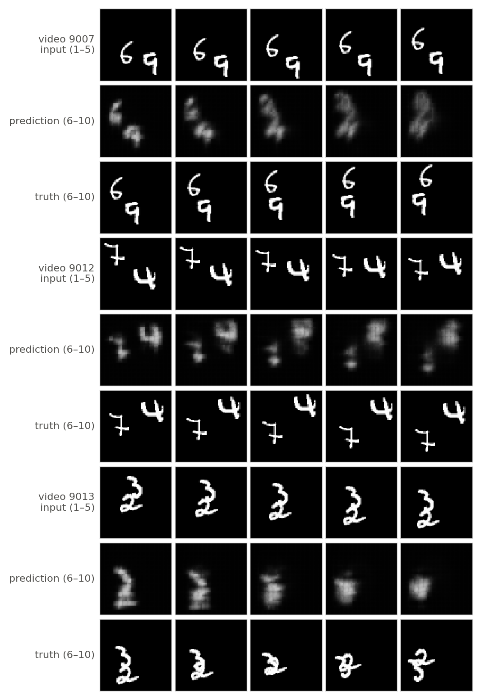

Implementation (mm/models.py). Each step does the following: pixel_unshuffle(x, 4) (1×64×64 → 16×16×16); ConvLSTM layer 1 (input 16 channels, 64 hidden, 3×3, padding 1); ConvLSTM layer 2 (input h(1)τ, 64 hidden); a 1×1 convolution 64 → 16; pixel_shuffle(·, 4); and a sigmoid. Each layer uses one Conv2d(in+64, 4·64, 3, padding=1, bias=True) on [uτ, hτ−1]. Its output is split into [i, f, o, g] and plugged into Eqs. (3)–(4), with no peepholes, no normalisation and default initialisation. States start at zero. The network rolls out for 9 steps: steps 1–5 read the input frames, steps 6–9 read the network's own previous prediction (no teacher forcing, gradients flow through the fed-back frames), and the outputs of steps 5–9 form Ŷ. The trainable parameter count is 184,576 + 295,168 + 1,040 = 480,784, matching the handout.
Training (mm/train.py). Adam with learning rate 10−3, batch size 32, 30 epochs and no schedule; the final-epoch weights are kept. Each epoch is one shuffled pass over the 8,000 training videos with one random window per video. The loss is the squared error averaged over the pixels and the available target frames of each video, then over the batch. torch.manual_seed(seed) controls initialisation, and a separate torch.Generator seeded with the same value controls shuffling, window, speed and symmetry sampling. Training time per epoch counts only the optimisation loop (with device synchronisation). The validation monitoring every 5 epochs is excluded.
Table 2. Per-horizon test MSE, E(5) and trainable parameters at 1×, t = 1. Model A is mean (seed 0, seed 1).
{{T2}}
Following the stated conventions, track how far (centre to centre, in original pixels) information can move between entering the network at step τ and leaving it as x̂τ+1:
Within a single step the possible paths are:
The longest is therefore reach = 2 × 1 cell × 4 px = 8 px per time step along a row or column. Along a diagonal a 3×3 kernel also reaches the corner cell, so the Euclidean reach is 8√2 ≈ 11.3 px. Recurrence does not add to the one-step reach. It only lets information travel further over several steps, at most 8 px more per step. So a digit that jumps much more than about 8 px between frames lands outside the neighbourhood from which the remembered position (held in h(1), h(2)) can be moved in one update. The network then cannot carry the digit's state along with it.